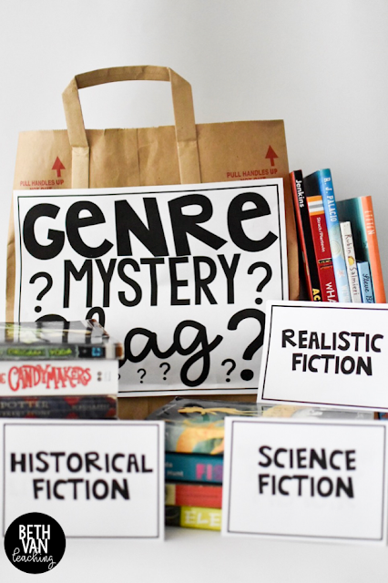

What Is a Genre?
Before we dive into what genre sells the most books, let’s discuss what a genre is. A genre is just a category in which your book falls. This will be evident in the underlying theme and storyline of your book. It helps readers decide what books they would most likely enjoy.
Someone who loves romance books won’t want to read a book where the hero doesn’t fall in love with the man of her dreams. In the same way, someone who picks up a crime book is not going to be too happy if the book is focused on the relationship between the detective and the witness instead of actually solving the crime.
Now, you definitely can have different elements of multiple genres in your book.
So don’t think that if you picked romance, for instance, you can’t have an element of crime, mystery, or sci-fi laced throughout the book. You most certainly can! But the overarching theme and the thing that will be highlighted will be the romance. The same goes for every genre
How to Pick the Right Genre for You

Picking the right genre for your book might seem like a daunting task. But it doesn’t have to be.
When you are thinking about the genre you want to write in, you are targeting a specific audience. So, think about:
- Who you want to reach?
- What does your ideal reader look like?
- What would they like to get out of the book?
Once you have these answers, you can develop your book. The best way to understand what a reader wants is to read the most popular books in that genre. All genres have bestselling books. The reason is that those books gave the reader what they wanted.
Another great tip is just to write what you enjoy reading. You probably already have a specific genre you are drawn to or that you always find yourself picking up.
This is your preferred genre and will be perfect for you to write in. You are already familiar with the writing style and direction of the storyline.
For non-fiction books, the genres are not as broad. Here, you can write about a topic you are familiar with or passionate about. If you have a skill or idea you would like to teach people, then writing a non-fiction book is the way to go.
Which Book Genre Is The Most Popular In 2021?
The most popular genre of books depends on the format and situation. The bestselling book genre is romance and the most profitable fiction book genre. Religious & inspirational books are the most popular non-fiction genre, whilst thrillers are the most popular audiobooks.
List Of Most Popular Book Genres
Before we look at book genres in detail, let’s first examine the best selling fiction books and non-fiction books.
Please note, that the publishing industry refers to the groups into which books are grouped as ‘genres’. However, if you look at Amazon you will see that these are called ‘categories’.
There are some differences between the publisher’s genres and Amazon’s categories, but for this article, they have been used interchangeably. You may also find that some people group books slightly differently, but in most situations the meaning is clear.
Most Popular Fiction Genres
- Fantasy.
- Science Fiction.
- Dystopian.
- Adventure.
- Romance.
- Detective & Mystery.
- Horror.
- Thriller.
- LGBTQ+.
- Historical Fiction.
- Young Adult (YA).
- Children’s Fiction.
Most Popular Nonfiction Genres
- Memoir & Autobiography.
- Biography.
- Cooking.
- Art & Photography.
- Self-Help/Personal Development.
- Motivational/Inspirational.
- Health & Fitness.
- History.
- Crafts, Hobbies & Home.
- Families & Relationships.
- Humor & Entertainment.
- Business & Money.
- Law & Criminology.
- Politics & Social Sciences.
- Religion & Spirituality.
- Education & Teaching.
- Travel.
- True Crime.
Bestselling Book Genres
When you look at best selling fiction books and non fiction books on Amazon and consider the numbers of books sold, the popularity of books genre differs between paper books and ebooks.
The top five selling categories for hard copy books on Amazon are:
- Memoirs and Biographies.
- Self Help.
- Religion and Spirituality.
- Health, Fitness, and Dieting.
- Politics and Social Sciences.
The top five selling categories for ebooks on Amazon are:
- Religion and Spirituality.
- Biographies and Memoirs.
- Business and Money.
- Self Help.
- Cookbooks, food, and vine.